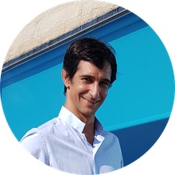

|  | Nicolas CapraisExtensive experience in the Wind industry negotiating turbine supply and service agreements, enterprise and project risk identification and mitigation Barcelona (Spain)
|
| MS Office: Excel, Word, PowerPoint | ⭐️⭐️⭐️⭐️ |
| Scheduling: MS Project, Primavera P6 | ⭐️⭐️⭐️ |
| Python programming | ⭐️⭐️ |